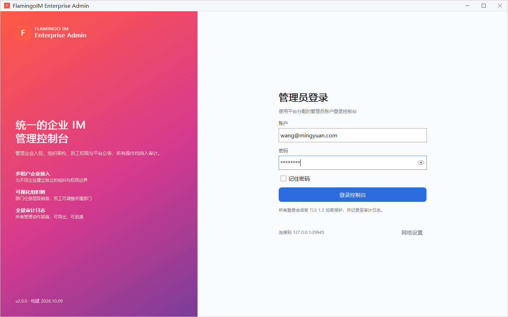
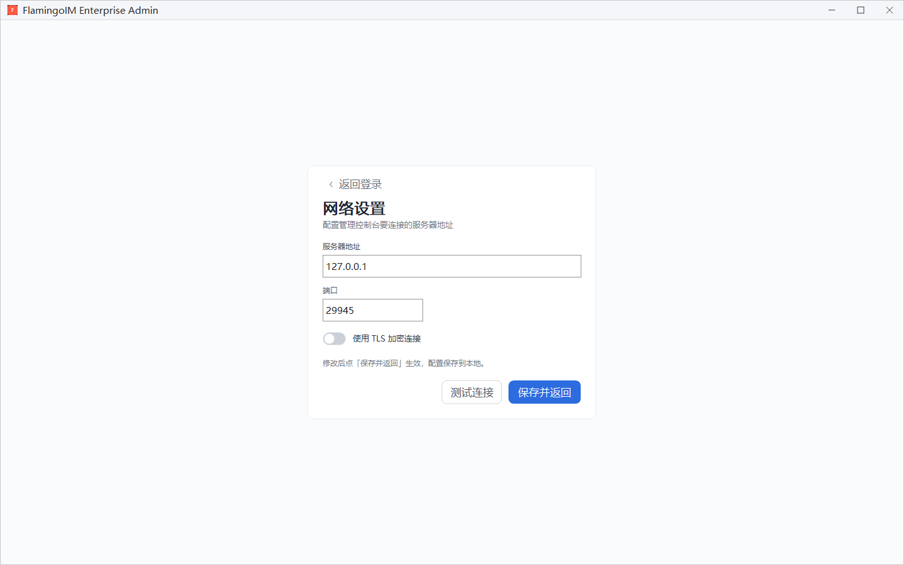
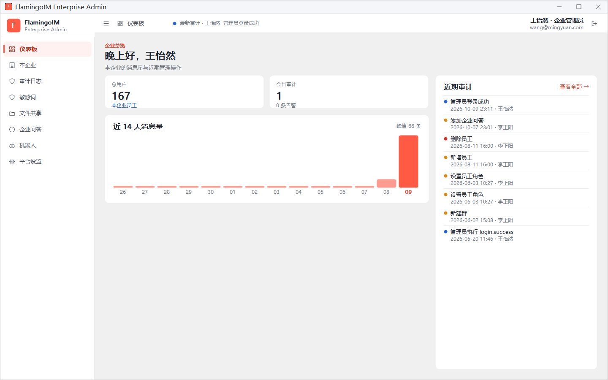

登录与仪表板
本章介绍企业管理员第一次使用管理控制台（flamingoAdmin）要做的几件事：配置服务器地址、用管理员账户登录，以及看懂登录后的界面布局和仪表板。
- 适用：企业管理员
- 需要：平台超级管理员为你开通的管理员账户（邮箱）与初始密码
管理员的两种角色
管理控制台是同一个程序，登录的账户不同，能看到的内容也不同：
| 角色 | 管理范围 | 演示账号 |
|---|---|---|
| 企业管理员 | 只能管理自己所在的企业：组织架构、员工、服务号、功能开关、敏感词、企业问答、企业机器人等 | 王怡然（wang@mingyuan.com），管理明远科技有限公司 |
| 平台超级管理员 | 管理平台上的全部企业，另外负责发布平台公告和客户端版本 | 李正阳（li@flamingo.com） |
本部分（第二部分）按企业管理员的视角介绍。平台超级管理员多出来的功能见第三部分「平台总览」。
登录
双击程序目录里的 flamingoAdmin.exe 启动管理控制台，窗口右侧是 管理员登录 表单：

- 在 账户 框中输入平台分配给你的管理员账户，一般是你的邮箱，例如
wang@mingyuan.com。 - 在 密码 框中输入密码，右侧的眼睛图标可以临时显示明文。
- 按需勾选 记住密码。勾选后，下次打开控制台会自动填入账户和密码。
- 点 登录控制台。
记住的密码保存在哪里账户和密码保存在程序目录的
flamingoAdmin.ini 里，密码经过加密，只有当前电脑上的当前 Windows 用户能解开。换了电脑或换了 Windows 用户登录时，需要重新输入密码。在公用电脑上请不要勾选。先确认服务器地址登录按钮下方的 连接到 127.0.0.1:29945 显示的是当前要连接的服务器。如果地址不对，请先点右侧的 网络设置 修改，详见下一节。截图中的端口 29945 是演示环境的端口。
网络设置
管理控制台连接的是聊天服务器的 HTTP 管理端口（服务端配置项 httplistenport，默认 12345，以实际部署为准）。在登录页点 网络设置 进入设置页：

- 在 服务器地址 中填写服务器的主机名或 IP 地址，例如
192.168.1.10。 - 在 端口 中填写端口号（1~65535）。
- 服务端按 TLS 方式部署时，打开 使用 TLS 加密连接 开关；是否需要打开请以部署方的说明为准。
- 点 测试连接，确认这台电脑能连通该地址和端口。
- 点 保存并返回。设置保存到本地，登录页的「连接到 …」随之更新。不想保存时点左上角的 返回登录。
认识控制台界面
登录成功后进入控制台主界面，默认打开仪表板。界面分为左侧导航、顶栏和内容区三部分：

1 2 3 4 5 6 7 8 9- 折叠 / 展开侧边栏：收起左侧导航，让内容区更宽
- 面包屑：显示当前所在的页面
- 最新审计：轮流显示最近几条审计记录
- 账号名与角色：当前登录的管理员姓名、角色和邮箱
- 退出登录：回到登录页
- 左侧导航：在各功能页面之间切换
- 统计卡：本企业员工总数与今日审计
- 近 14 天消息量：每天的消息条数柱状图
- 近期审计：最近的管理操作
企业管理员的左侧导航共有八项：
| 导航项 | 用途 | 详见 |
|---|---|---|
| 仪表板 | 本企业的消息量与近期管理操作 | 本章 |
| 本企业 | 组织架构、员工、服务号、在线用户、功能开关，以及建群 | 组织架构与员工、服务号、建群与在线用户、功能开关 |
| 审计日志 | 所有管理操作的记录 | 审计日志与平台设置 |
| 敏感词 | 维护敏感词库，查看被拦截的内容 | 敏感词 |
| 文件共享 | 查看员工发起的文件共享，必要时强制取消 | 文件共享管理 |
| 企业问答 | 维护显示在群聊「问答」页签里的问答 | 企业问答 |
| 机器人 | 配置企业机器人 | 企业机器人 |
| 平台设置 | 修改自己的姓名与登录密码 | 审计日志与平台设置 |
仪表板
企业管理员的仪表板标题是 企业总览，用来快速了解本企业的整体情况：
- 总用户：本企业的员工总数，下方注明「本企业员工」。
- 今日审计：今天产生的审计事件数，下方显示其中有几条告警。
- 近 14 天消息量：最近 14 天每天的消息条数，右上角显示这段时间的峰值，当天的柱子用深色突出。
- 近期审计：最近的管理操作，每条显示操作说明、时间和操作者。圆点颜色表示级别：蓝色为普通，橙色为警告，红色为危险（例如删除员工）。点右上角的 查看全部 → 会跳到审计日志页。
近期审计里为什么有别人的名字审计记录包含所有对本企业做过的管理操作，平台超级管理员替你的企业做的操作（例如截图中李正阳新增员工、设置员工角色）也会出现在这里。